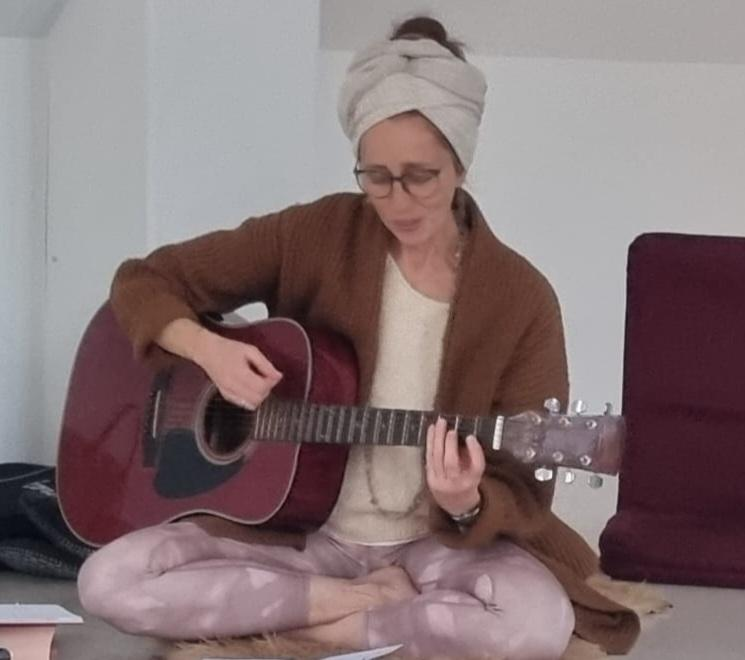

Mela
Ich bin Melanie Guth-Mehrens, mit spirituellem Namen Preet Namdass Kaur. Seit mehr als 5 Jahren unterrichte ich Kundaliniyoga in Bollheim. Im Laufe der Zeit sind Räume zum Mantrasingen und freiem Tanzen dazugekommen.
Ich liebe die Energie, die ich weitergeben darf und selber empfange!
Darüber hinaus liebe ich die Natur, Klang, Rhythmus und Licht.
Wahe Guru ✨
Oder in der 3. Person:
Melanie Guth-Mehrens, mit spirituellem Namen Preet Namdass Kaur. Seit mehr als 5 Jahren unterrichtet sie Kundaliniyoga in Bollheim. Im Laufe der Zeit sind Räume zum Mantrasingen und freiem Tanzen dazugekommen.
Sie liebt die Energie, die sie weitergeben darf und selbst empfängt!
Darüber hinaus liebt sie die Natur, Klang, Rhythmus und Licht.
Wahe Guru ✨